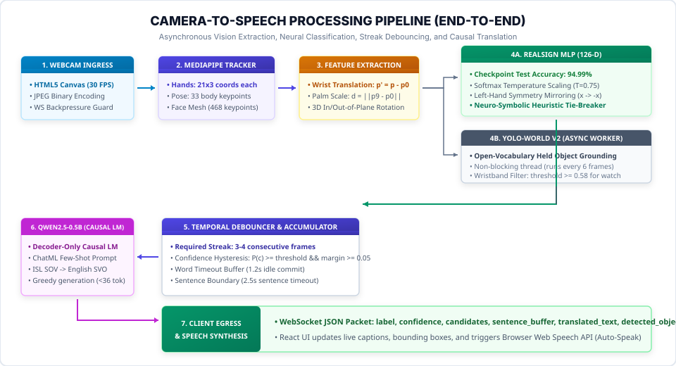

End-to-End Execution Workflow & Pipeline Dataflow
Tracing how a physical sign language gesture moves from the user's camera through MediaPipe, spatial normalization, neural inference, streak debouncing, causal translation, and speech synthesis.
End-to-End Processing Pipeline

1. The 10-Step Execution Lifecycle
The complete path of a video frame through the SETU runtime is broken down into ten discrete operations:
| Stage | Component & File | Operation Performed | Latency / Timing |
|---|---|---|---|
| 1. Ingress | useRecognitionStream.ts |
Webcam video captured at 30 FPS, painted to HTML5 canvas, encoded as JPEG binary bytes, sent over WebSocket. | ~2.1 ms |
| 2. Backpressure Guard | websocket/recognize.py |
FastAPI server drains queued stale frames to ensure zero socket lag and decodes JPEG bytes via cv2.imdecode. |
~1.8 ms |
| 3. Landmark Extraction | services/pipeline_manager.py |
MediaPipe Holistic extracts 3D coordinates for Left Hand (21), Right Hand (21), Pose (33), and Face Mesh. | ~8.5 ms (CPU/GPU) |
| 4. Normalization | training/features/geometry.py |
Wrist origin translation, palm span scale normalization, and 3D in-plane/out-of-plane rotation alignment. | ~0.4 ms |
| 5. Dual Inference | models/adapters/realsign.py |
RealSign MLP (126-D) computes 26 alphabet logits while YOLO-World runs asynchronously in background loop. | ~0.42 ms (CUDA) |
| 6. Geometric Boost | evaluate_alphabet_heuristics() |
Neuro-symbolic rules evaluate physical fingertip distances (O vs C, U vs V, A, F, D) to break margin ties. | ~0.05 ms |
| 7. Streak Debouncer | websocket/recognize.py |
Requires 3–4 consecutive identical frames, checks confidence threshold and margin, enforces idle baseline transition. | ~0.02 ms |
| 8. Word Buffer | SentenceAccumulator.add_token() |
Appends letters to active word. If idle for 1.2 seconds, commits word with trailing space. | ~0.01 ms |
| 9. Causal Translation | services/nlp/neural_translator.py |
If sentence idle for 2.5 seconds, dispatches ISL gloss tokens to Qwen2.5-0.5B causal LM for fluent English synthesis. | ~35 ms (CUDA) |
| 10. Client Egress & TTS | useTTS.ts & Canvas HUD |
Client receives JSON telemetry, renders skeletal overlay, updates captions, and speaks translated text via Web Speech API. | ~1.5 ms |
2. Temporal Debouncing State Machine
A major flaw in naive sign language models is “frame flickering”—emitting rapid duplicate characters (e.g. typing “AAAAA” in half a second). SETU enforces a strict four-layer state machine in backend/app/websocket/recognize.py:230-360:
A predicted sign is not considered valid on a single frame. It must maintain identical top-1 classification across 3 consecutive frames (or 4 frames for alphabet letters) before triggering a state transition.
The predicted probability must exceed the user-configured confidence threshold ($P(c) \ge \text{threshold}$) AND the margin between the top-1 and top-2 candidates must be at least $0.05$: $$P(\text{top}_1) - P(\text{top}_2) \ge 0.05$$
To sign duplicate consecutive letters (such as L followed by L in “HELLO”), the signer must perform a brief hand drop, relaxation, or slight movement ($d_{\text{wrist}} > 0.12$) to reset the baseline lock.
Once a character is committed to the sentence buffer, a repeat lock flag is engaged. The system ignores identical static frames until the hands either leave the camera frame or transition through neutral posture.
3. Kinetic Energy & Motion Segmentation
To distinguish intentional signing gestures from static rest or incidental arm repositioning, SETU computes Mean Joint Kinetic Energy across consecutive frames in websocket/recognize.py:206-212:
# Compute instantaneous velocity vector for all 21 hand landmarks
v_hand = (current_hand_pts - prev_hand_pts) / max(dt, 0.001)
# Mean Euclidean kinetic motion energy
kinetic_energy = float(np.mean(np.linalg.norm(v_hand, axis=-1)))
# Segmentation gating
KINETIC_ENERGY_THRESHOLD = 0.025
is_actively_signing = kinetic_energy > KINETIC_ENERGY_THRESHOLD- Active Signing State (
kinetic_energy > 0.025): The user is in dynamic motion. The system buffers frames into temporal sequence queues. - Settled Posture State (
kinetic_energy ≤ 0.025for ≥2 frames): The user has held a stable hand shape. The static alphabet classifier is evaluated. - Hands Idle / Drop: If wrist $y$-coordinate exceeds $0.85$ (hands down near waist/desk), the state machine enters neutral rest mode and resets temporal streaks.
4. Sentence Accumulator & Timeout Buffers
Individual fingerspelled letters and holistic phrases are buffered into coherent words and sentences by backend/app/services/nlp/accumulator.py:SentenceAccumulator:
| Buffer Mechanism | Timeout Setting | Trigger Condition & Action |
|---|---|---|
| Word Timeout Buffer | 1.2 seconds |
When hands rest or remain idle for >1.2s after signing letters, the accumulated letters are committed as a completed word with a trailing space. |
| Sentence Boundary Buffer | 2.5 seconds |
When no new tokens arrive for >2.5s, the sentence is finalized. The accumulator triggers neural translation via Qwen2.5-0.5B and fires client-side voice synthesis. |
| Multimodal Object Fusion | Instantaneous | If a held physical object is detected by YOLO-World during an active gesture, MultimodalFuser combines the concepts (e.g. “WANT” + “cup” → “I want cup”). |
5. Speech Synthesis & Reverse Text-to-Sign
Managed by frontend/src/hooks/useTTS.ts using the native browser W3C Web Speech API (window.speechSynthesis):
- Zero External Network Calls: Voices are synthesized completely offline on the user's operating system.
- Auto-Speak Trigger: Automatically speaks the translated English sentence upon sentence completion.
- Server Fallback: If running in a headless or unsupported browser, server-side
pyttsx3provides local audio generation.
Implemented in frontend/src/components/TextToSignWorkspace.tsx for two-way communication:
- Two-Way Communication: Enables a hearing clerk to type English sentences, which are decomposed into ISL grammatical sign cards.
- Fingerspelling Card Reel: Displays animated reference cards and anatomical hand diagrams for each letter and phrase.
- Educational Value: Helps hearing learners verify their own hand shapes against standard ISL visual cards.